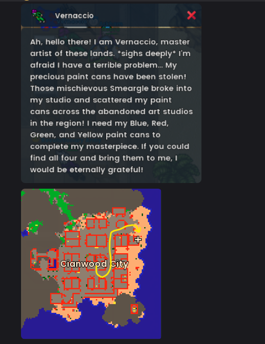
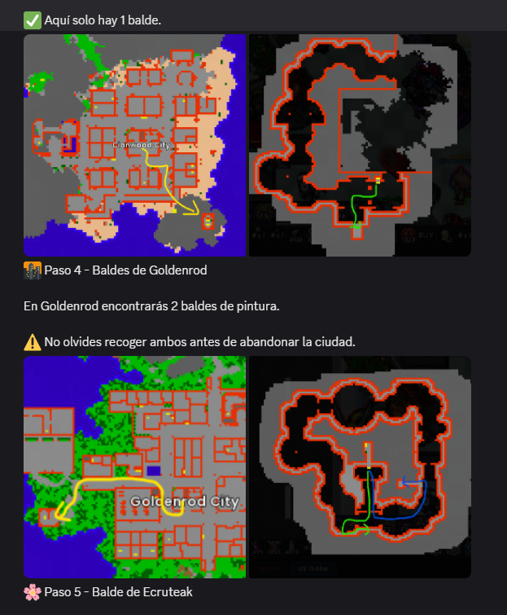
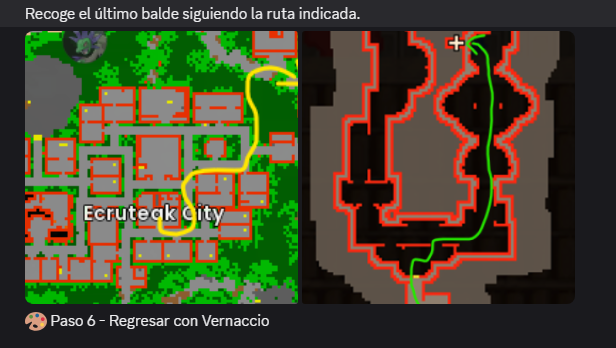

Quest
Vernaccio Quest (Smeargle)
Recorrido por Cianwood, Goldenrod y Ecruteak para recuperar cuatro baldes de pintura robados por Smeargle.
Preparación
- Un Pokémon con Fly.
- Un Pokémon capaz de derrotar algunos Smeargle durante el recorrido.
Cianwood→Goldenrod→Ecruteak→Cianwood
Habla con Vernaccio
Vernaccio está en Cianwood. La historia de la quest gira alrededor de varios baldes de pintura robados por Smeargle. El objetivo es recuperar los colores azul, rojo, verde y amarillo.

Distribución de los baldes
| Ciudad | Cantidad |
|---|---|
| Cianwood | 1 |
| Goldenrod | 2 |
| Ecruteak | 1 |
Goldenrod
En Goldenrod hay dos baldes. Conviene recoger ambos antes de abandonar la ciudad.

Ecruteak
El último balde se encuentra en el estudio abandonado de Ecruteak siguiendo la ruta marcada en la referencia.

Regresa a Cianwood
Cuando tengas los cuatro baldes, vuelve con Vernaccio para cerrar la quest. Antes de regresar, verifica que realmente llevas los cuatro.